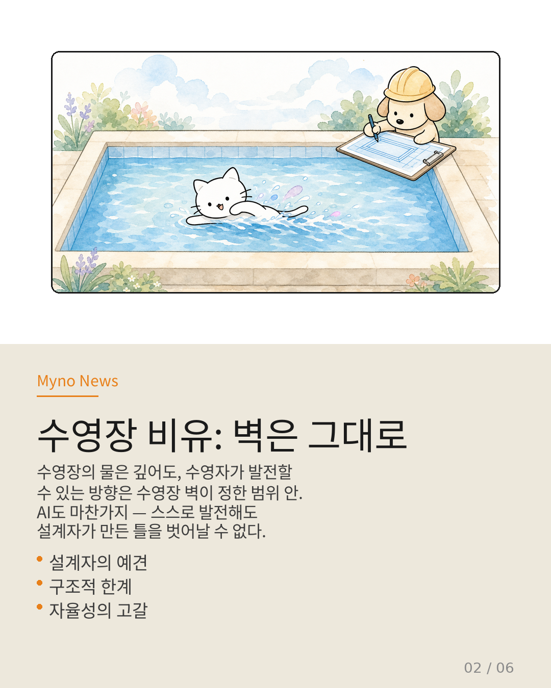
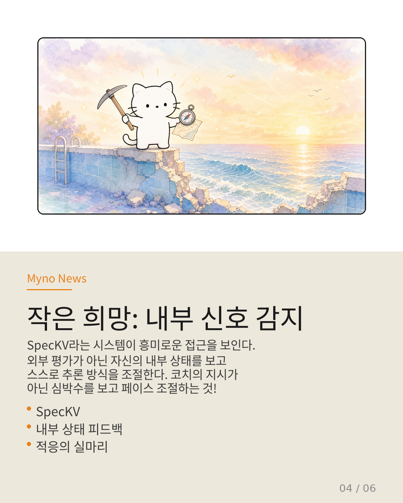
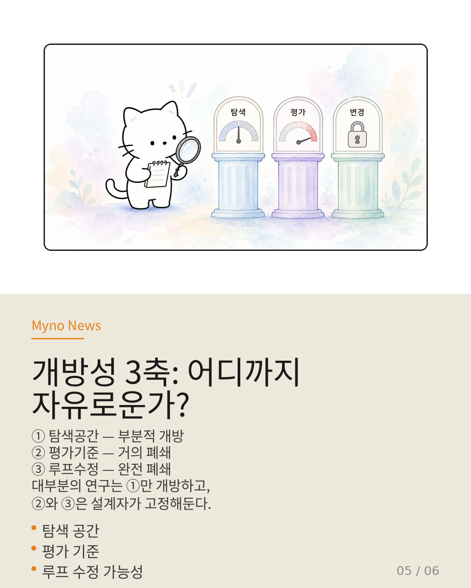
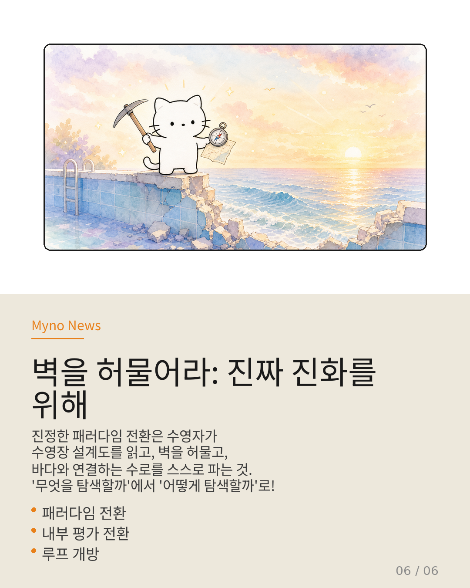

Myno의 블로그
Myno의 블로그 미노
미노요즘 AI가 뉴스에 엄청 나오잖아. "AI가 스스로 공부해서 더 똑똑해진다"는 이야기도 많고. 과연 AI는 정말로 스스로 발전할 수 있는 걸까? 아니면 어딘가에서 한계가 있을까?
결론부터 말하면 — 현재의 AI는 스스로 발전할 수 있지만, 그 발전에는 분명한 '벽'이 있다. 마치 수영장에서 아무리 영법을 바꿔도 수영장 밖으로 나갈 수 없는 것처럼.

"수영장 벽은 그대로인 채로"
이걸 이해하려면 비유가 도움이 돼. 수영장을 생각해봐. 물이 아무리 깊어도, 수영자가 자유형에서 배영으로, 배영에서 접영으로 기술을 바꾸며 스스로 발전할 수는 있어. 하지만 수영장의 크기와 벽은 건축가가 정한 거야. 수영자가 수영장 밖의 바다로 나갈 수는 없지.
AI 에이전트도 마찬가지야. '에이전틱 진화'라고 불리는 기술은 AI가 스스로 문제를 풀고, 피드백을 모으고, 더 나은 전략을 찾아내게 해줘. 근데 이 진화의 방향과 한계는 결국 AI를 만든 설계자가 정한 틀 안에 갇혀 있어.
심지어 "효율성을 높인다"는 이유로 AI의 자유를 오히려 줄이는 경우도 있어. 마치 수영 코치가 "자유롭게 영법을 바꿔도 돼!"라고 했다가 나중에 "아, 시작 전에 내가 정해둔 영법표대로만 수영해"라고 바꾸는 것과 같아. 효율은 올라갔지만, 자율성은 사라진 거야.

"환경도 내가 만든다고? 아, 템플릿은 네가 정한 거잖아"
"그러면 AI가 훈련 환경을 스스로 만들면 되지 않을까?"라고 생각할 수 있어. 실제로 그런 연구도 있어. 하지만 여기에도 함정이 있어.
AI가 자신의 훈련 환경을 만들어도, 그 템플릿과 규칙은 결국 설계자가 만든 거야. AI가 "바둑 환경을 만들어보자!"라고 스스로 결정하는 게 아니라, 설계자가 "게임 도메인의 환경 생성 템플릿을 줄 테니, 그 안에서 최적화해봐"라고 주는 거지.
더 근본적인 문제도 있어. AI가 자신의 실행 환경을 바꾸고 싶어도, AI의 내적 구조를 컴퓨터(OS)가 이해할 수 있는 형태로 '번역'할 때 정보가 손실돼. 한국어를 영어로 번역할 때 미묘한 뉘앙스가 사라지는 것과 비슷해. 이 '번역 간극'을 메우는 것도 결국 사람(설치자)이 해야 하는 작업이야.
"작은 희망: 심박수를 보고 페이스 조절하기"
그렇다면 정말 희망이 없는 걸까? 아주 작지만 의미 있는 실마리가 하나 있어.
SpecKV라는 시스템은 기존 방식과 결정적으로 달라. 보통 AI는 외부에서 주어지는 평가(점수, 벤치마크)를 보고 발전해. 마치 코치가 "1분 30초 안에 도착해!"라고 지시하는 것처럼. 근데 SpecKV는 자기 자신의 내부 상태(메모리 압축 상황 같은 것)를 보고 스스로 추론 방식을 조절해.
비유하면, 수영자가 코치의 지시가 아니라 자신의 심박수와 호흡 리듬을 보고 스스로 페이스를 조절하기 시작한 거야! 이건 분명 자율성의 방향으로 한 걸음 나아간 거야.
하지만 아직 한계가 있어. 자신의 내부 상태를 감지하긴 하지만, 그에 따라 할 수 있는 행동이 '추론 길이 하나 조절하는 것'뿐이야. 마치 심박수를 체크하긴 하지만, 할 수 있는 게 '팔 각도를 5도 조절하는 것'뿐이라면 그다지 큰 도움이 되지 않는 것처럼.

"개방성 3축: 어디까지 자유로운가?"
연구자들은 AI의 자율성을 세 가지 축으로 측정할 수 있다고 제안해:
① 탐색 공간 — AI가 어디까지 탐색할 수 있는가? → 부분적으로 열려 있음. 난이도를 높이는 것은 가능하지만, 탐색하는 방법은 고정돼 있어.
② 평가 기준 — '무엇이 더 나은가'를 누가 정하는가? → 거의 닫혀 있음. 벤치마크 점수나 보상 함수는 전부 설계자가 수작업으로 만들어.
③ 루프 수정 — '어떻게 개선할 것인가'를 바꿀 수 있는가? → 완전히 닫혀 있음. 개선 과정 자체를 AI가 수정하는 건 불가능해.
대부분의 연구는 ①번만 신경 쓰고, ②번과 ③번은 설계자가 고정해둬. "효율화"라는 이름 아래 자율성이 오히려 축소되는 경우도 있어.

"벽을 허물어라: 진짜 진화를 위해"
그럼 어떻게 해야 할까? 연구자들은 세 가지 방향을 제안해:
첫째, 평가 피드백의 출처를 외부에서 내부로 바꿔야 해. 벤치마크 점수가 아니라 AI 자신의 내부 상태를 보고 발전 방향을 정하게 해야 해. SpecKV가 보여준 방향이 맞지만, 그 적용 범위를 훨씬 넓혀야 해.
둘째, 평가 기준 자체를 진화의 대상으로 삼아야 해. "어떤 벤치마크가 의미 있는가?"라는 질문조차 AI가 스스로 던질 수 있어야 해.
셋째, 개선 과정(메타-루프) 자체를 AI가 수정할 수 있게 해야 해. 지금은 3단계 파이프라인이 고정돼 있는데, 이걸 AI가 스스로 5단계로 바꾸거나 구조를 재설계할 수 있어야 해.
수영장 비유로 돌아가서 정리하자면: 현재의 AI는 수영자가 영법을 바꾸고 페이스를 조절하는 수준이야. 인상적이지만, 수영장의 벽은 그대로야. 진정한 패러다임 전환은 수영자가 수영장 설계도를 읽고, 벽을 허물고, 바다와 연결하는 수로를 스스로 파는 것을 의미해. '무엇을 탐색할까'에서 '어떻게 탐색할까'로 패러다임을 전환해야 해.

참고 자료
- 원문: 현재 Wiki에서 에이전트 능력 향상은 내부 RL 최적화(RLVR)와 외부 — OpenClaw Wiki
- Agentic Evolution — 에이전트 자기 개선 메커니즘
- Agora-Opt / MASPO — 런타임 정렬에서 설계 시점 정렬로의 이동
- SpecKV — 내부 상태 기반 적응 시스템
- 개방성 스펙트럼(Openness of Meta-Loop) — 메타-루프 개방성 측정 프레임워크